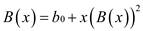
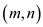
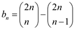
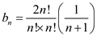
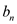
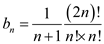

BINARY SEARCH TREE
Binary search tree is of two types; the sorted binary tree and the ordered binary tree.
There are different properties of a binary search tree:
• The right subtree of the binary search tree contains the nodes having its key values which are greater than the key node.
• The left sub-tree of the binary search tree contains the nodes having its key values less than the key node.
• Both left and the right sub-tree are parts of the binary search tree.
Condition for the binary search tree is that a duplicate node should not be present. There are various benefits of a binary search tree in comparison to the other tree in relation to searching and sorting. As searching and sorting a binary search tree is fast in comparison to others. There are various operations involved in a binary search tree, such as insertion, deletion, traversing and all other searching and sorting techniques.
Binary search tree with equal keys
a. In case of binary search trees, search starts when insertion in the binary search tree is started. In this, we compare key values with the node of the tree. If the key value is not equal to the root node of the tree, then in this case, searching can be performed from the left sub-tree or from the right sub-tree.
In case of searching, if we reach the external node of the tree, then left and right sub-tree is added with the key and value pair by matching the corresponding value related to the key. Condition of a binary search tree is that if the value is less than the root node, then the recent value, if it is smaller, is added to the left hand side, otherwise it will be added to the right hand side.
In case of duplicates in the value at time of searching, the
search time of the binary search tree will increase. When insertion
of the n items is performed in the binary search tree, when
tree is initially empty and the entire identical key is to be
inserted, then in this case all the nodes are present in the right
hand side of the tree. Thus, asymptotic performance in this case is
 (n).
(n).
Improvement of insertion of tree in binary search tree
b. As stated in the question, the following test is performed regarding x.key=z.key and y.key=z.key. In the problem, we have Boolean flag b.x at node x. In this, we set x.left or x.right on the base of b.x, which gives the value as either false or true. At the time of insertion, whenever x is visited, it has same key value. During the process we will have a balanced binary tree.
Here we have to insert elements level wise, that is kth
level will be inserted only when (k–1)th level is filled
completely. And for a balanced binary tree, we have the height of
the tree proportional to the (log
n); and as we have to insert n items, so it will
finally be proportional to (n
log n).
c. If there are a list of nodes which have equals keys at a specific node, which is x, then in this case z is inserted as shown below:
First, z value is compared with the x.key, if the value is less than x.key, then in this case, it is inserted to the left of the node x, otherwise it will be inserted to the right.Here in this case, TREE-INSERT is actually done to insert an element to the end of the linked list.
Thus, in this case, asymptotic performance is (1).
d. Here, the node x is set randomly to either x.left or x.right in the given TREE-INSERT
operation. In the random order for insertion, we have: In the
worst case, it can be in ascending order; so all the insertion will
happen on the left or on the right side. In this case, the number
of nodes is proportional to n; so the worst case performance
is  . So, the
final tree after the insertion of elements is of same height as in
a randomly built binary search tree. Thus height in this case is
(log n). Average performance of TREE-INSERT is (log
n).
. So, the
final tree after the insertion of elements is of same height as in
a randomly built binary search tree. Thus height in this case is
(log n). Average performance of TREE-INSERT is (log
n).
Number of different binary trees
Catalan numbers are the special type of numbers which are used in various counting programs and these are represented as:
These numbers are generated in various mathematical situations such as
No of binary search trees possible with0, 1, 2, 3… nodes
No of binary trees possible with 0 node is 1
No of binary trees possible with 1 node is 1
No of binary trees possible with 2 nodes is 2
No of binary trees possible with 3 nodes is 5and so on
a . For the proof of the equation:
… … (1)
Where
Substituting the values in equation (1) as:

…
…
This expression can be summed up as:
b. Consider the generating Function,
… … (2)
Squaring equation (2),
From above problem,
Multiplying above equation with x,
… … (3)
Then from equation (2) and equation (3),

But
… … (4)
Comparing equation (4) with Quadratic equation which is as:
So,
A formula for the solution of quadratic equation for variable x is as:
Applying this formula on equation (4),
Instead of , use ‘–‘ the same way as + instead of – as
Hence,
c . The formula is used to produce the Catalan numbers for its proof. Use the concept of Counting Diagonal-Avoiding Paths (Lattice paths).
In this problem, a number of paths have to be found. These are from origin to a point in space which stays on the path on or above the diagonal from origin to a point in space.
These paths always stay on or above the diagonal.
Number of paths from origin to is 1
Number of paths from origin to is 1
Number of paths from origin to is 2
Number of paths from origin to is 5. (5 paths cannot be showed in graph but there are 2 more paths could be draw easily)
So, finding number of paths from origin to a point
in space which stay
on or above the diagonal will be the  Catalan
number
Catalan
number
Total number of paths from origin to is
Total number of paths from origin to is
But from this removing the number of paths which cross diagonal are necessary.
To find the Number of paths that cross the diagonal, mirror technique is going to be used, now draw another line parallel to diagonal
Paths which cross the diagonal always end up at
So total no of paths from to is
Number of paths from origin to a point
in space which stay
on or above the diagonal (Total
paths form origin to –Total
number of paths that cross diagonal)
(Total
paths form origin to –Total
number of paths that cross diagonal)
 … … (5)
From combination formula as:
Applying the combinational formula on equation (5) as:
 … … (6)
Again from combinational formula putting this value in equation (2),
Hence, it shows that
d .For the proof of equation use the Stirling’s approximation formula which is as:
The formula for has been proved earlier in part c as:
… … (7)
Applying combination formula to expand in equation (7) as:
 … … (8)
Now applying stirling’s formulaon equation (8) as:
As
Hence, it is proved that.